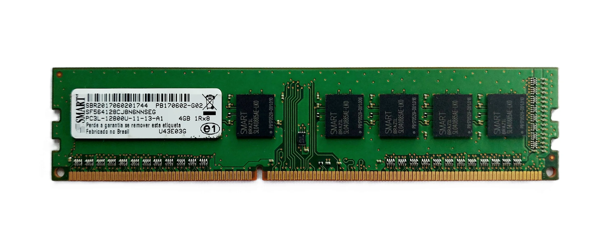
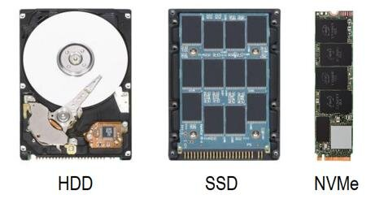
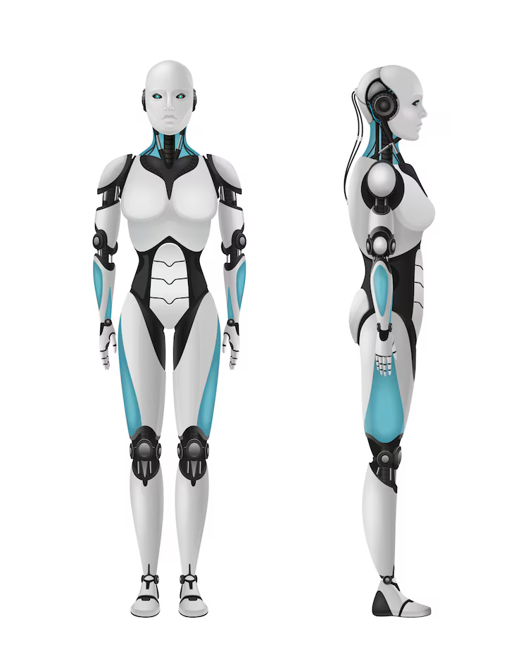
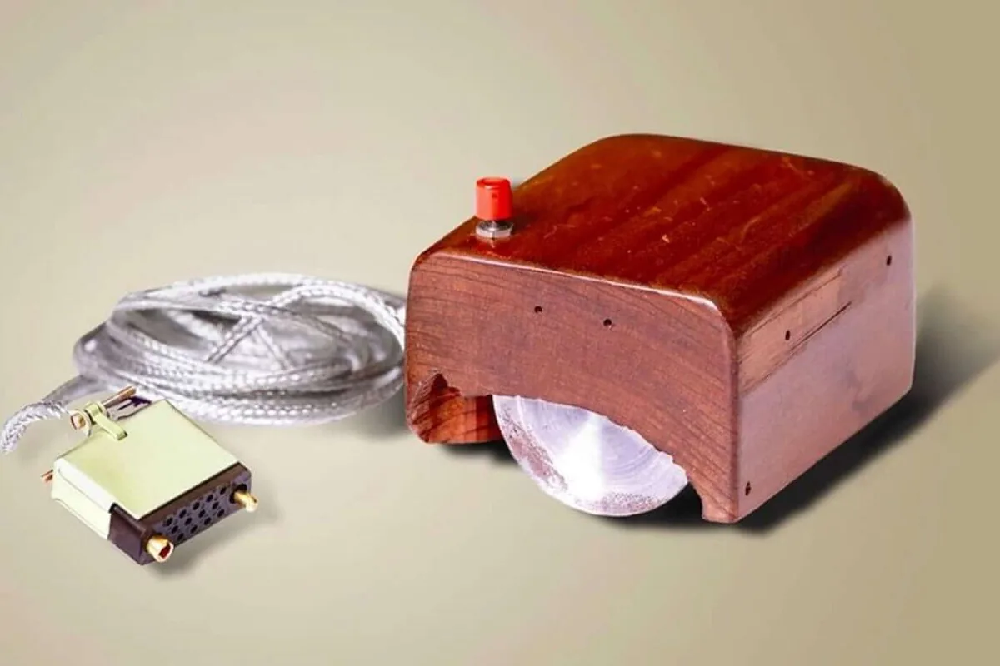
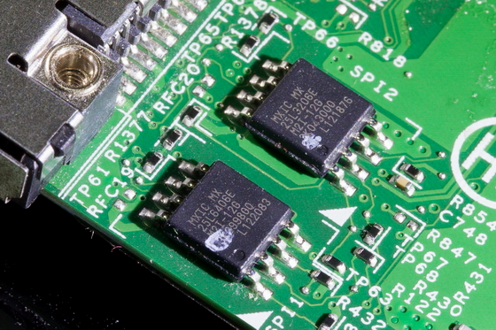
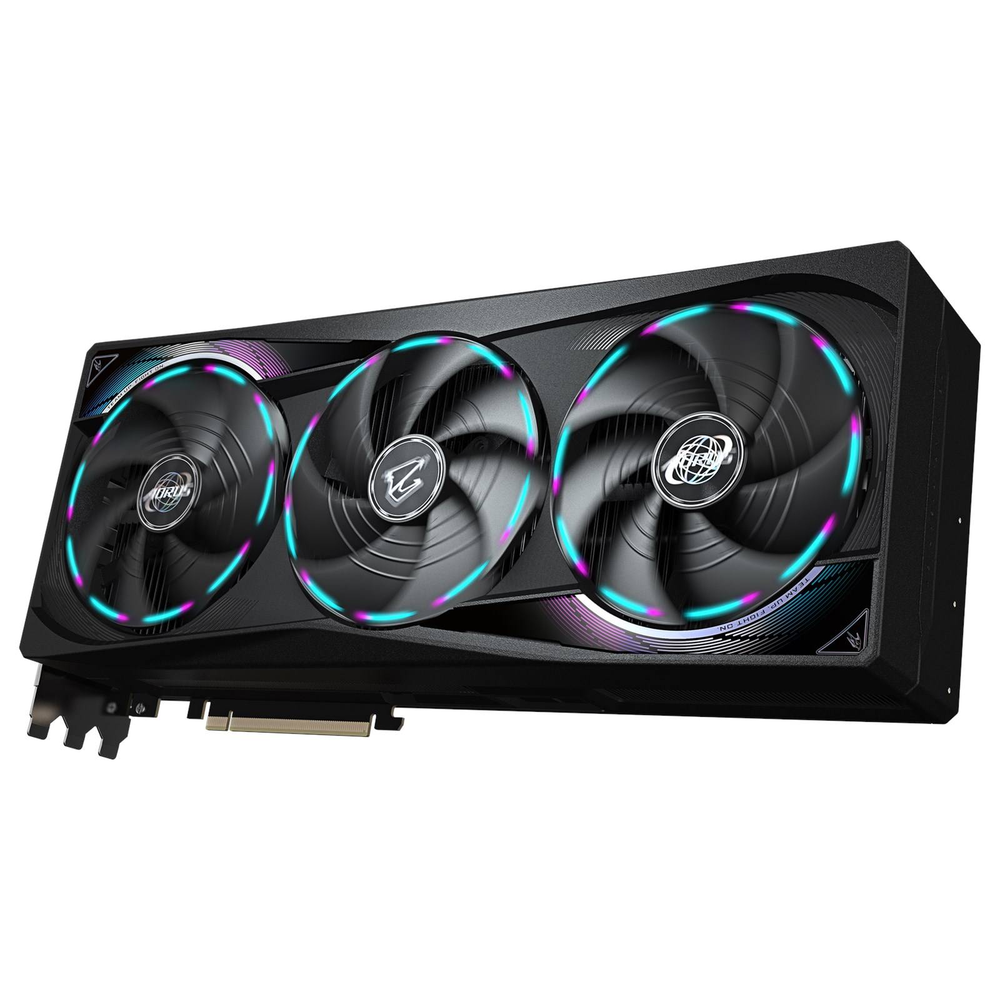
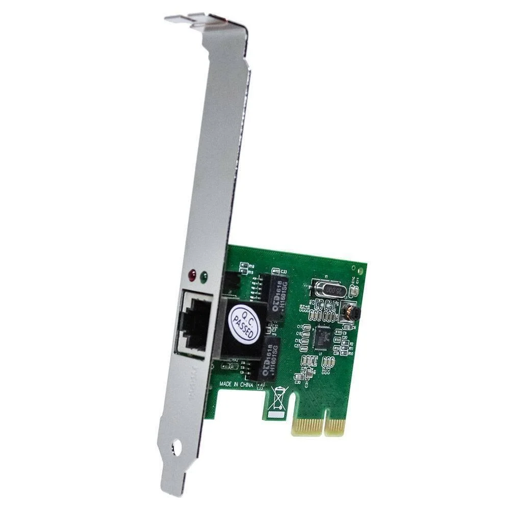
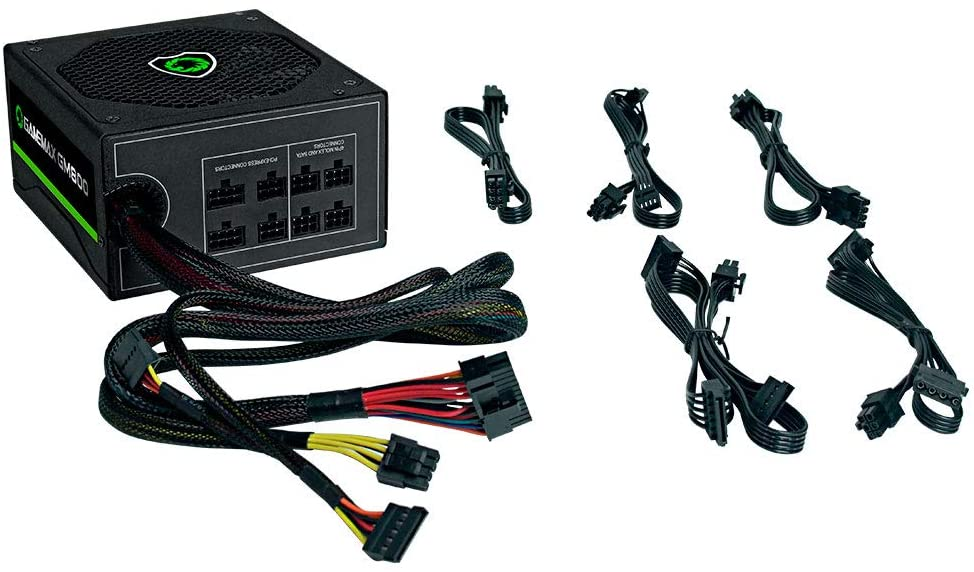
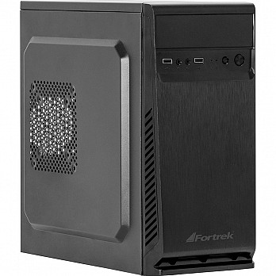

Fundamentos de Informática
Hardware, Software, DIKW e o Sistema Binário.
O que é um Computador?
"Uma máquina eletrônica capaz de receber dados (entrada), processá-los de acordo com regras lógicas (programa) e produzir informação (saída)."
Receber 📥 ➜ Processar ⚙️ ➜ Armazenar 💾 ➜ Exibir 📤
As Duas Metades
Hardware
A parte física.
"O que você chuta."
Software
A parte lógica.
"O que você xinga."
1. Hardware
Corresponde a todos os componentes físicos, tangíveis e eletrônicos.

RAM
Memória de Trabalho

Armazenamento
Memória de Longo Prazo
Analogia: Corpo Humano

🧠
Cérebro
Processador (CPU)
👀 👂 🖐️
Sentidos
Teclado, Mouse (Entrada)
🗣️ 👋
Fala e Gestos
Monitor, Som (Saída)
⚡
Sistema Nervoso
Placa-Mãe (Conecta tudo)
📚
Memória Longa
Discos (HD/SSD)
💭
"Na ponta da língua"
RAM (Curto prazo/Rápida)
2. Software
Parte lógica. Conjunto de instruções que dizem ao hardware o que fazer.
Hierarquia do Software
-
Nível 1
Software de Sistema (SO):
Windows, Linux, Android. Gerencia a máquina.
-
Nível 2
Software de Aplicação:
Excel, Chrome, Jogos. Serve ao usuário.
Conceito Fundamental
42
DADO
Elemento bruto. Sozinho não significa nada.
➜
42ºC
INFORMAÇÃO
Dado + Contexto.
"O paciente está com febre."
A Pirâmide DIKW
Data, Information, Knowledge, Wisdom
DATA (Dado): Fatos brutos, símbolos, números sem contexto.
Ex: Vermelho
INFORMATION (Informação): Dados processados com significado.
Ex: Sinal Vermelho no semáforo.
KNOWLEDGE (Conhecimento): Informação aplicada/entendida.
Ex: Sinal vermelho significa "Pare o carro".
WISDOM (Sabedoria): Julgamento ético e previsão.
Ex: Parar evita acidentes e salva vidas.
O Ciclo de Processamento
1. Entrada
Receber Dados
📥
2. Processamento
Transformar
⚙️
3. Saída
Gerar Informação
📤
Dispositivos de Entrada
Teclado
Mouse
Microfone
Scanner
Dispositivos de Saída
Monitor
Impressora
Som
Projetor
Memória: Onde guardo as coisas?
Memória RAM
Volátil
- • Muito rápida.
- • É a "mesa de trabalho" do computador.
- • Apaga se a luz acabar.
Armazenamento (HD/SSD)
Não Volátil
- • Mais lenta que a RAM.
- • É o "arquivo/armário" do computador.
- • Mantém os dados salvos.
Quiz da Memória 🧠
Onde fica salvo quando...
Você está digitando um texto no Word (sem salvar):
0 e 1
A Jornada do Binário
BIT = BInary digiT
A menor unidade de informação possível.
Por que não usamos decimal?
Humanos têm 10 dedos (Sistema Decimal). Computadores usam eletricidade.
Sistema Decimal (Base 10)
Dígitos: 0, 1, 2, 3, 4, 5, 6, 7, 8, 9
Difícil distinguir 10 níveis de voltagem sem erros.
Sistema Binário (Base 2)
Dígitos: 0, 1
Fácil: Tem corrente (1) ou Não tem corrente (0).
Contando até 15 com 4 bits
No decimal, quando acabam os números (9), adicionamos uma casa (10). No binário, quando acaba (1), adicionamos uma casa (10).
Decimal Binário (4 bits)
0 0000
1 0001
2 0010
3 0011
4 0100
5 0101
6 0110
7 0111
Decimal Binário (4 bits)
8 1000
9 1001
10 1010
11 1011
12 1100
13 1101
14 1110
15 1111
O Nascimento do Byte
1 Byte = 8 Bits
Por que 8? Porque era o suficiente para representar uma letra inteira do alfabeto, números e símbolos na tabela ASCII.
01000001 = Letra 'A'
O Poder do Byte
Com 8 interruptores (bits), quantas combinações podemos fazer?
256
De 0 a 255
28 = 2 x 2 x 2 x 2 x 2 x 2 x 2 x 2 = 256
É por isso que as cores RGB vão até 255 e os IPs antigos iam até 255!
Aritmética Binária: Soma
Regras
- 0 + 0 = 0
- 0 + 1 = 1
- 1 + 0 = 1
- 1 + 1 = 0 (e "vai 1")
Exemplo (2 + 1 = 3)
0010 (2)
+ 0001 (1)
0011 (3)
Aritmética Binária: Subtração
Regras
- 1 - 1 = 0
- 1 - 0 = 1
- 0 - 0 = 0
- 0 - 1 = 1 (pede emprestado)
Exemplo (3 - 1 = 2)
0011 (3)
- 0001 (1)
0010 (2)
A Escada dos Bytes
KB
Kilobyte (1024 bytes) - Texto
MB
Megabyte (1024 KB) - MP3/Foto
GB
Gigabyte (1024 MB) - Vídeo HD
Desafio Binário 🔢
Como se escreve o número 5 em binário (4 bits)?
Dica: 4 + 1 = 5. (Posições: 8 4 2 1)
Periféricos: A Comunicação
ENTRADA (Input)
Enviam dados PARA o computador.
⌨️ 🖱️ 🎤 📷
SAÍDA (Output)
Recebem dados DO computador.
🖥️ 🖨️ 🔊 🎧
HÍBRIDOS (I/O)
Fazem os dois sentidos.
📱 (Touch) 💾 (Pendrive)
Software Livre (GPL)
Código aberto. Liberdade para usar, estudar, modificar e distribuir.
Exemplo: O Caixa Eletrônico
- Entrada: Cartão + Senha (Teclado)
- Processamento: Verificar saldo no banco de dados.
- Saída: Dinheiro (Dispensador) + Recibo.
Curiosidade: O Primeiro Mouse

Feito de madeira em 1964 por Douglas Engelbart.
Firmware

Um software especial gravado diretamente no hardware. Ex: A BIOS do computador.
Drivers
Programas tradutores. Ensinam o Sistema Operacional a conversar com um hardware específico (ex: placa de vídeo).
Cloud Computing (Nuvem)
Usar hardware e software via internet. Seus dados não estão no seu PC, mas em servidores gigantes (Data Centers).
Placa de Vídeo (GPU)

Um "cérebro" extra dedicado apenas para desenhar imagens na tela (Jogos, Renderização 3D).
Placa de Rede

O componente responsável por conectar o computador à internet ou a outros computadores.
Fonte de Alimentação

Converte a energia da tomada (AC) para a energia que o PC usa (DC). O coração elétrico.
Gabinete

A "caixa" que protege todos os componentes internos. Não confundir com CPU!
Analogia Final: O Bolo 🍰
🥣
Hardware
A batedeira, o forno, a forma.
📜
Software
A Receita (Instruções passo a passo).
🥚
Dados
Os ingredientes (Ovos, farinha).
Mapa Mental da Aula
COMPUTADOR
HARDWARE (Físico)
CPU / RAM / HD
Periféricos
SOFTWARE (Lógico)
SO / Apps
Binários (0/1)
Desafio Final 🏆
Um caixa eletrônico é Hardware ou Software?
Exercícios de Fixação
Responda em um documento de texto e envie ao professor.
- Qual a diferença fundamental entre Hardware e Software? Dê um exemplo de cada.
- Na pirâmide DIKW, qual a diferença entre Dado e Informação?
- Explique a analogia do corpo humano para: CPU, RAM e HD.
- Por que os computadores utilizam o sistema binário (0 e 1) e não o decimal?
- Converta o número binário 0101 para decimal.
- Se a energia acabar repentinamente, o que acontece com os dados na RAM? E no HD?
- O que é um periférico de Entrada? Cite dois exemplos.
- Quantos bits existem em 1 Byte? Quantos valores diferentes 1 Byte pode armazenar?
- O que é um Driver e para que ele serve?
- Diferencie Software Livre de Software Proprietário.
Próxima Aula...
Mergulho no Hardware:
Placa-mãe, CPU e Memórias
Vamos abrir a caixa e entender como as peças conversam entre si.
FIM DA AULA 02
Obrigado pela atenção!
COTIL - Fundamentos de Informática